Running WordPress in Kubernetes
Structured HTML version of the talk transcript
- Slide 1. Running WordPress in Kubernetes
- Slide 2. What is this presentation about?
- Slide 3. To use or not to use
- Slide 4. How Kubernetes actually works
- Slide 5. WordPress is not stateless
- Slide 6. To run WordPress in Kubernetes you must separate the state
- Slide 7. WordPress runtime must be disposable
- Slide 8. WordPress pods are ephemeral, the database is not
- Slide 9. Media Storage Layer
- Slide 10. Object Cache Layer: Redis or Memcached
- Slide 11. Ingress is not your app layer
- Slide 12. Edge Layer: CDN and HTML Caching
- Slide 13. Background work belongs outside the web request
- Slide 14. Immutable WordPress Deployments
- Slide 15. Key Takeaways
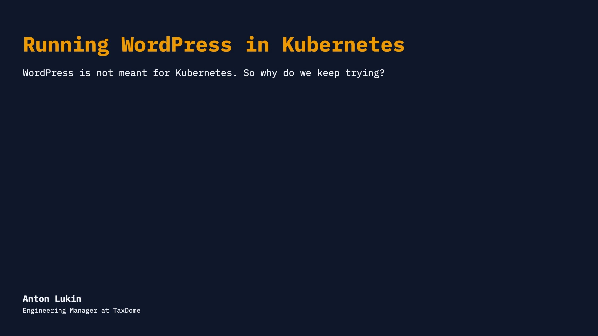
Zdravo svima! Zovem se Anton Lukin. Učim srpski, ali još ne govorim dobro, zato ću danas pričati na engleskom.
I work as an Engineering Manager at TaxDome. We build a service for accountants and their clients around the world, with a strong focus on the US market. My team works on marketing projects, including the main website, which is of course built on WordPress.
Before that, I mostly worked in media and advertising agencies, building high-load WordPress sites, some of which handled over 20 million visitors per month. Overall, I have been working with WordPress for more than 15 years, and I still love it.
Today I want to talk about using Kubernetes with WordPress.
What is this presentation about?
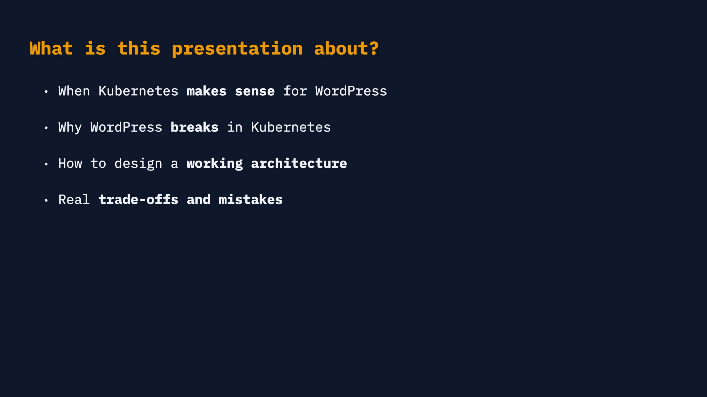
When I joined my current company, I inherited a WordPress setup running on Kubernetes. Almost immediately I faced a lot of bugs that looked random — stale content here, a missing upload there and so on. Later it became clear they were not random at all. Most of them were related to a misunderstanding of how Kubernetes works.
A common mistake is thinking Kubernetes itself is the problem. It usually isn't. The real challenge is the architecture: Kubernetes expects one type of application, while WordPress is a different one.
That is the core of this talk. I want to explain where the conflict comes from, what problems it causes, and what architecture works if you still want to use Kubernetes.
Before we continue, let's answer a simple question: should we run WordPress in Kubernetes?
The short answer is: no. That's it... I'm joking!
To use or not to use
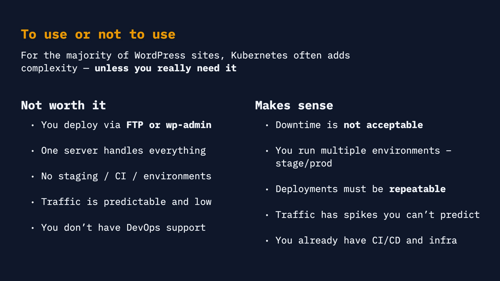
For most WordPress sites, Kubernetes adds complexity without clear benefits.
If you still deploy through FTP or wp-admin, if one server is enough, if you do not have staging or CI, and if your traffic is predictable, Kubernetes probably is not your next next step.
Without DevOps support, or at least strong infrastructure discipline, it often becomes an expensive way to make simple systems fragile.
It starts making sense when downtime is not acceptable, when you run multiple environments, when traffic is spiky, and when deployments have to be repeatable.
What does it mean – repeatable deployments. That means you do not change something manually on a production server. I know, we all love doing that, but in Kubernetes it becomes a problem very quickly: the machine running your code can be replaced at any time, and your manual changes will disappear with it.
And if you are thinking about leaving because you never plan to use Kubernetes, wait. A lot of what we discuss today applies to any multi-server environment and to high-load WordPress sites in general.
Now let's talk a bit about Kubernetes.
How Kubernetes actually works
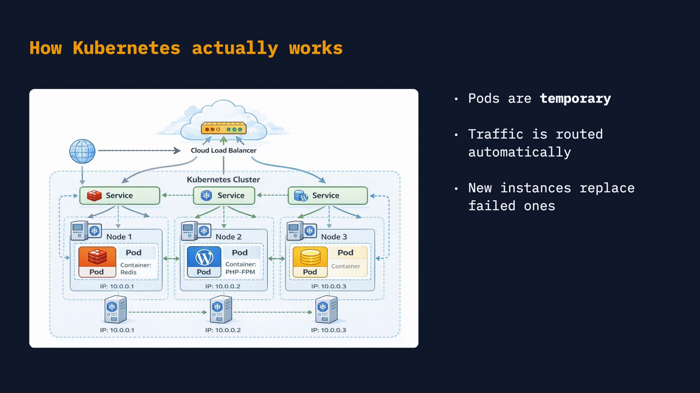
Before we go deeper, do not think about Kubernetes as something too abstract or scary. At a very simple level, it is a way to run and manage your application across several servers.
And getting started is not so complicated now. Managed Kubernetes gives you the cluster, and AI can help you write the first configuration. So the basic setup is not the hardest part anymore.
Servers in Kubernetes are called nodes, and your app runs in smaller units called pods.
Think of pods as minions. They can be replaced, recreated, scaled, or even killed at any time. Of course, please do not kill actual minions.
But in Kubernetes, traffic may land on any pod, so every pod should be interchangeable.
Pods are temporary. If one pod disappears, nothing important should disappear with it.
But if one pod has files, cache, or changes that the others do not have, the whole model starts to break.
And this is where WordPress enters the stage.
WordPress is not stateless
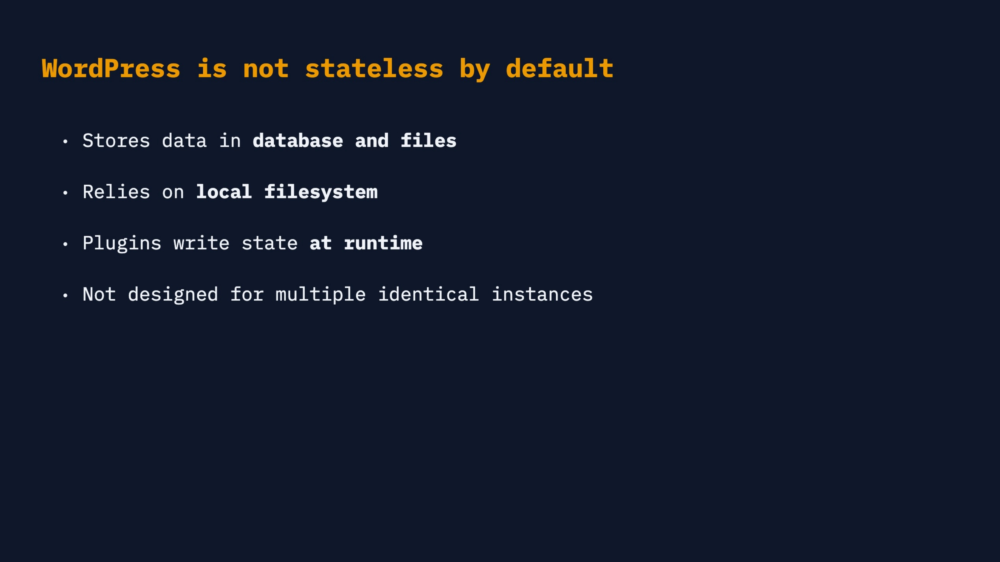
WordPress expects state. And here I mean server-side state: data or files the server must remember between requests.
For example, imagine a simple page with information about your company. If it only shows text, the page itself has no state. But when you add a contact form, you need to store something: the message, email, maybe an uploaded file. Now you have state.
WordPress has a lot of this. It uses the database, uploads files, lets plugins write to disk, and often stores cache locally. On a classic single server this feels normal, because that server is a part of the application.
Kubernetes expects a different model: every pod should behave the same.
For example, a plugin may enable or disable some feature based on whether a local file exists. If you disable it on one pod, and you have three pods, only one third of your traffic may see the change. We had a real case like this with Redis Cache.
To run WordPress in Kubernetes you must separate the state
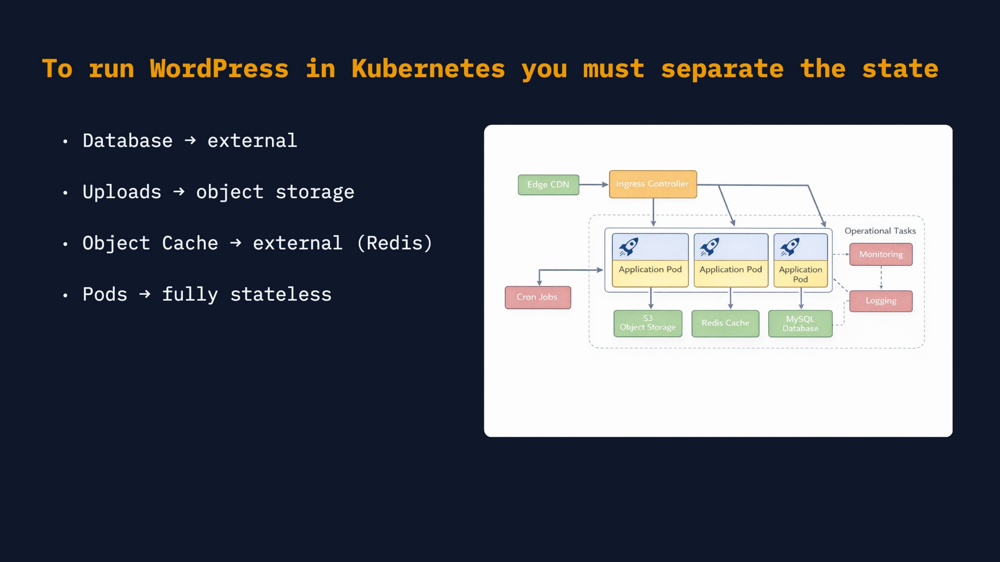
So what do we do? We separate the state. The pod should serve requests, but important data should live outside of it: database, uploads, cache, background jobs, and configuration.
This diagram is the map for the rest of the talk. We split the WordPress setup into layers and will go through them one by one: runtime, database, media storage, object cache, ingress, edge caching, background work, and deployments.
WordPress runtime must be disposable
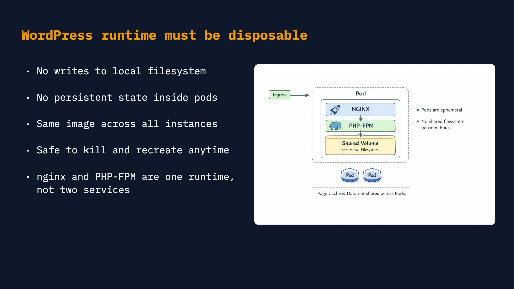
This first layer is the WordPress runtime. It is the part that receives a request, runs PHP, loads WordPress code, and returns HTML.
In many setups this layer is nginx plus PHP-FPM. In other setups it can be Apache. The exact web server is not the main point.
If you use nginx and PHP-FPM, it is usually better to keep them in the same pod, because they need access to the same WordPress files: nginx serves static files, and PHP-FPM executes PHP files.
This layer should be easy to replace. It serves requests, but the important state should live in the next layers.
The first and most obvious one is the database.
WordPress pods are ephemeral — the database is not
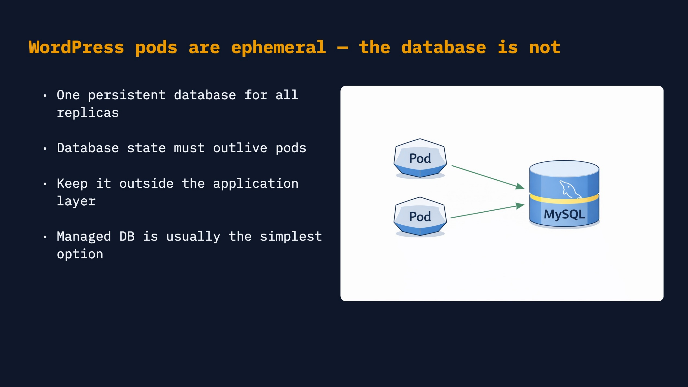
If WordPress pods are temporary, the database is not. It is the source of truth for content, settings, users, orders, and many other things.
You can run MySQL inside Kubernetes, but for production it is usually not the first choice. Kubernetes is very good at replacing workloads, while a database needs stable storage, backups, restore procedures, and careful failover. That is why the simplest option is often a managed database like RDS.
If you do not want to pay for managed database, another practical option is to run MySQL on a separate server in the same private subnet. It is still your responsibility, but at least it is not tied to the pod lifecycle.
By the way, one example from our practice. We used a managed database for production, but to save money, staging environments used MySQL inside the cluster.
That created a problem with write speed. Staging behaved differently from production, so we could not correctly estimate load or trust performance checks there.
The database is only one kind of state. The next one is even more WordPress-specific: uploads.
Media Storage Layer
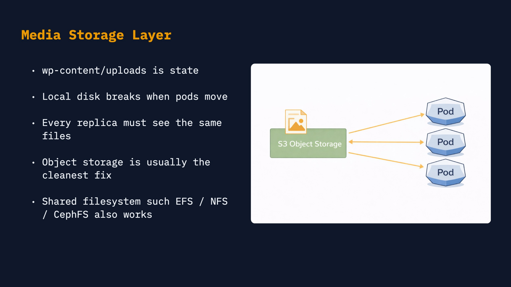
The next state layer is media. In WordPress this usually means wp-content/uploads: images, documents, generated thumbnails, and other user files.
Local pod storage does not work here, because every pod must see the same files. If an image exists only on one pod, some users will see it and some users will not.
The cleanest option is usually object storage, like S3 or an S3-compatible service. Shared filesystems such as EFS, NFS, or CephFS can also work, especially when plugins expect a normal filesystem.
You can also keep uploads inside the cluster using a PersistentVolume. I will not go deep into storage modes here, but if you have several nodes, this setup can be tricky.
So the rule is simple: uploads are state, and all pods must share the same media storage. For production, external object storage is often the easiest model to operate.
In WordPress, this usually means using a plugin like s3-uploads or building your own solution that sends uploads to S3 or a remote server and serves them from there.
Object Cache Layer: Redis or Memcached
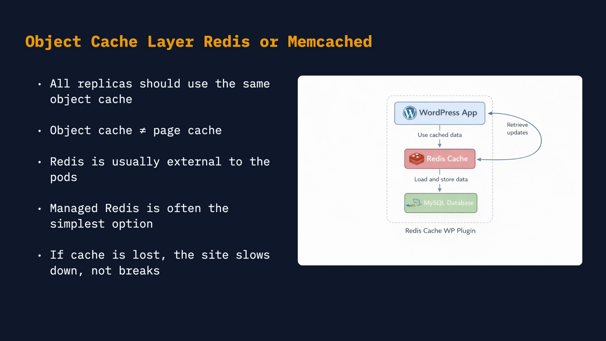
Cache is state too, but it is performance state: if the cache disappears, the site should slow down, not lose content.
Maybe you do not need object cache at all. But if you do need it, it is better to store it in shared Redis or Memcached, not inside each pod.
One nice thing about WordPress is that it does not use PHP sessions by default. Authentication works through cookies. But if a plugin or your own code needs PHP sessions, store them in this layer, because PHP stores sessions as local files by default.
Page cache is also possible here. Batcache from Automattic is a classic example. But usually rendered HTML cache is moved to another layer, and we will talk about later.
Ingress is not your app layer
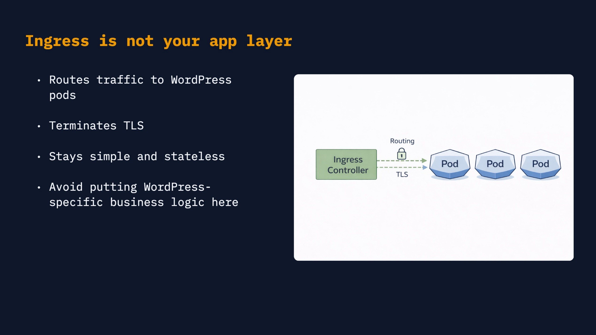
Ingress is the place where traffic enters the cluster before it goes to the application.
It is not your application layer. Its job is simple: route traffic to WordPress pods, terminate TLS, and stay as stateless as possible.
Ingress should be boring.
Edge Layer: CDN and HTML Caching
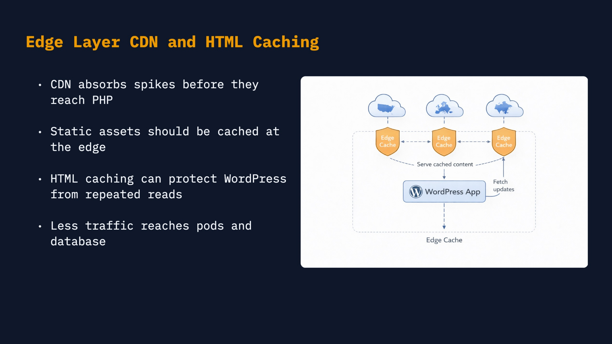
Now let's reduce the amount of work WordPress has to do.
A CDN, for example Cloudflare, Fastly, or CloudFront, can cache static assets and HTML before traffic reaches PHP. This is usually the best place for page cache, because it is outside the pods and has one clear invalidation layer.
Page cache through WordPress plugins is also possible, but it should not write rendered HTML to local pod disk. Store it in Redis, object storage, or another shared storage layer instead.
We had a painful case where page cache was written to disk on different pods, and then nginx also cached those pages. After "clearing the cache", old content could still live for weeks because it existed in several different places.
With page cache, invalidation becomes the main problem, and you must be very clear about what should never be cached, like wp-admin or private user pages.
nginx page cache inside pods is usually not a great fit for the same reason: each pod has its own cache. If CDN caching is not an option, Varnish can be a better place to put shared HTML cache.
Background work belongs outside the web request
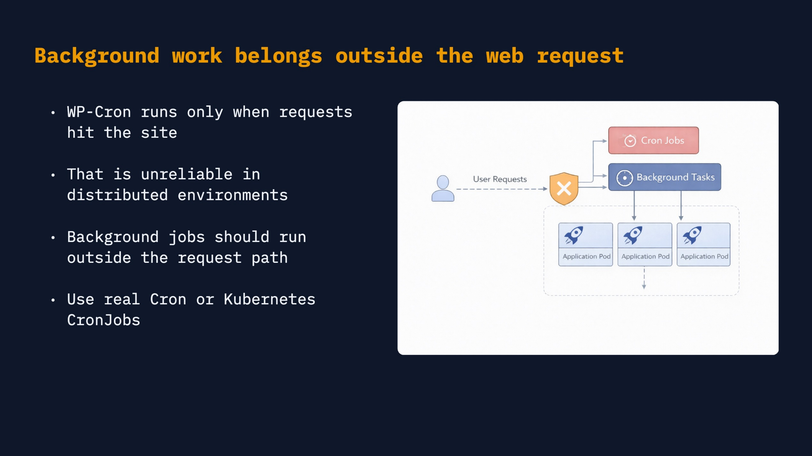
WordPress also has background work. By default, WP-Cron is triggered by web requests: someone opens a page, and WordPress checks if it needs to run scheduled tasks.
In Kubernetes this is not reliable enough. Jobs can run late, run more than once, or run from a random web pod.
So use real cron, Kubernetes CronJobs, queues, or workers for sync, imports, notifications, and long-running jobs. The web pod should serve pages; background work should have its own place.
Immutable WordPress Deployments
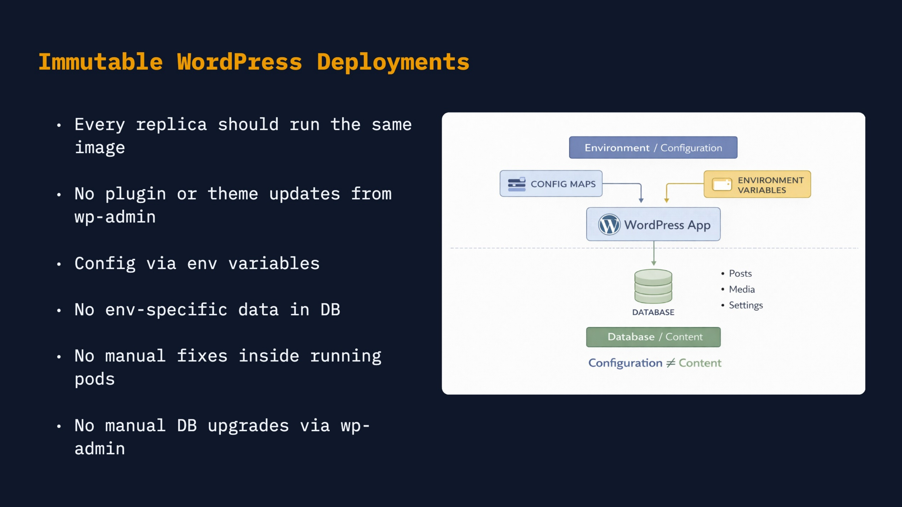
The last layer is deployments: how a new version of WordPress code, plugins, themes, and configuration gets to production.
In this model, changes should go through the build and deployment pipeline. No plugin updates from wp-admin, no quick edits on a production server, and no manual fixes inside a running pod.
Configuration should also be separate from content. Content belongs in the database. Configuration belongs in code, environment variables, config maps, or secrets.
Core and plugin updates sometimes need database migrations. Handle them as a controlled deployment step, often with WP-CLI, instead of letting them happen randomly during the first admin request.
The goal is simple: every deployment should be predictable and repeatable.
Key Takeaways
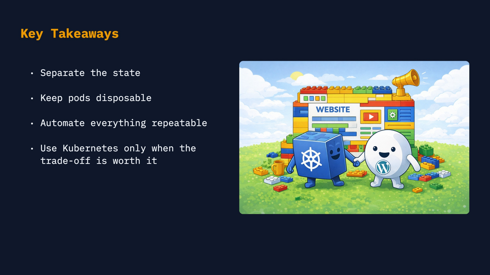
Ok! We are at the finish line.
This presentation was not meant to be a complete guide or step-by-step instruction. At conferences, the goal is usually simpler: to make you interested enough to try something yourself.
If you have not worked with Kubernetes before, try deploying a small WordPress cluster yourself and think about the layers we discussed today. When I was preparing this talk, it took me just one evening to build a working demo. And you can do the same.
Thank you.